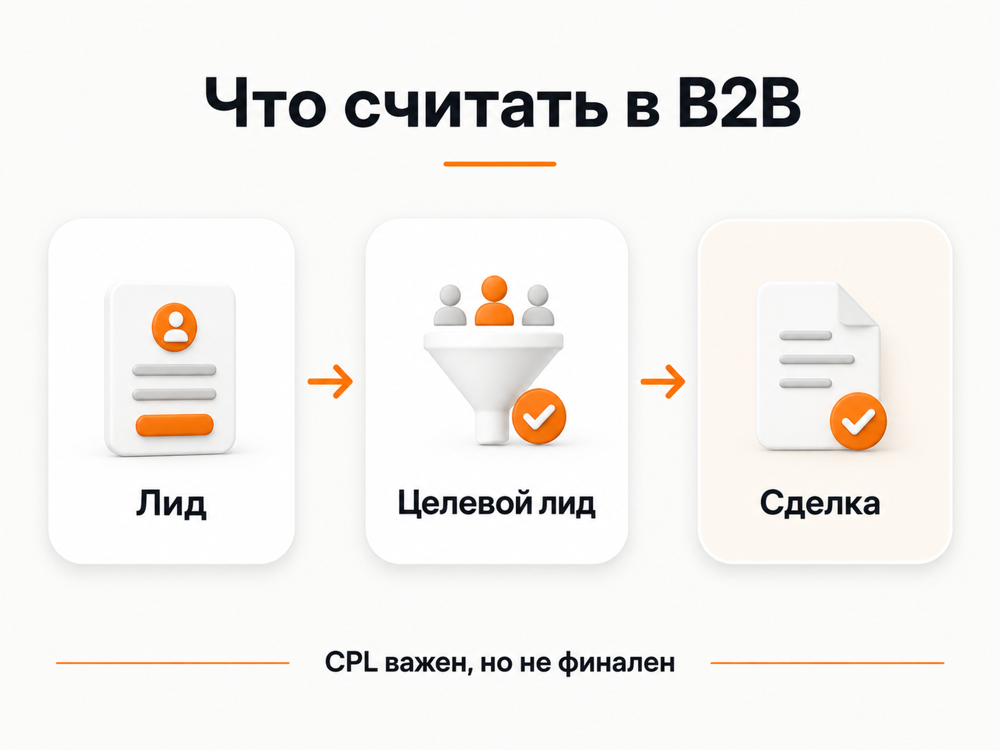

Блог о платном трафике
Реклама B2B-компании: как привлекать клиентов и считать результат
Реклама B2B-компании работает лучше всего, когда строится не вокруг количества кликов, а вокруг качества заявок и реальной воронки продаж. В B2B клиент часто долго выбирает поставщика, сравнивает несколько компаний, согласует решение внутри организации и возвращается к покупке спустя недели или месяцы. Поэтому один рекламный канал редко решает задачу целиком.
Я обычно начинаю с трех вещей: кто принимает решение, какой спрос уже существует и что бизнес считает хорошей заявкой. После этого можно выбирать Поиск Яндекса, РСЯ, ретаргетинг, SEO, отраслевые площадки и другие источники трафика.
Чем B2B-реклама отличается от обычной рекламы услуг
У B2B-проектов есть несколько особенностей, которые напрямую влияют на продвижение:
- длинный цикл сделки;
- высокий или сильно различающийся чек;
- небольшая аудитория по сравнению с массовым B2C;
- несколько участников принятия решения;
- сложный продукт, который трудно объяснить одним объявлением;
- необходимость квалифицировать обращения;
- высокая цена ошибки, если реклама приводит не тех клиентов.
Например, рекламу может увидеть специалист, который собирает информацию, а договор подписывает руководитель. В другом проекте заявку оставляет собственник бизнеса, но решение зависит от технического директора или отдела закупок.
Из-за этого показатель «получили 50 лидов» почти ничего не говорит о результате. Нужно знать, сколько из этих обращений подошли по задаче, бюджету, региону, объему заказа и дошли до следующего этапа продажи.

Сначала нужно разделить спрос и аудиторию
Одна из самых частых ошибок в B2B - объединять в одну рекламную кампанию все продукты, услуги и типы клиентов.
Если компания одновременно продает оборудование, оказывает сервис, работает с дилерами и принимает индивидуальные заказы, это четыре разных сценария. У них могут отличаться:
- поисковые запросы;
- лица, принимающие решение;
- аргументы в объявлении;
- посадочные страницы;
- средний чек;
- допустимая стоимость заявки;
- цикл сделки.
Поэтому я разделяю рекламу не ради красивой структуры в кабинете, а там, где меняется экономика или поведение клиента.
Это хорошо видно в кейсе фабрики детской одежды. У фабрики было два направления: пошив детской одежды под заказ и продажа готовой продукции оптом. Под них сделали разные лендинги, потому что аудитория и намерение клиента различались.
Какие каналы подходят для рекламы B2B-компании
Универсального набора каналов нет. Их нужно выбирать по тому, как формируется спрос в конкретной нише.
| Канал | Когда особенно полезен | Что учитывать |
|---|---|---|
| Поиск Яндекса | Клиент уже ищет поставщика, услугу или решение | Ограниченный объем спроса, высокая конкуренция по горячим запросам |
| РСЯ | Прямого спроса мало или нужно расширять охват | Качество площадок, креативы, сегменты аудитории, качество лидов |
| Ретаргетинг | Клиент долго выбирает и возвращается к решению позже | Нужен достаточный трафик и понятные сегменты посетителей |
| SEO и контент | Есть информационный и коммерческий спрос, который можно собирать системно | Результат накапливается постепенно, нужна структура сайта и экспертный контент |
| Отраслевые площадки | Клиенты реально ищут поставщиков в каталогах, сообществах или профильных сервисах | Работает не для каждой ниши, нужно проверять качество обращений |
Яндекс указывает, что Директ подходит в том числе B2B-компаниям и бизнесу без привязки к физической точке. На Поиске реклама работает со сформированным спросом, а Рекламная сеть Яндекса позволяет обращаться к аудитории вне момента прямого запроса.
Для производственных B2B-проектов похожую логику я разбираю отдельно в статье «Реклама производственной компании».
Поиск, если спрос уже сформирован
Поиск обычно является первым кандидатом, если потенциальный клиент сам вводит коммерческий запрос: ищет поставщика, подрядчика, оборудование, производство, консалтинг или конкретную услугу.
Плюс поиска в том, что пользователь уже осознает задачу. Минус - в узком B2B объем таких запросов может быть небольшим. Поэтому здесь особенно важно не расширять семантику бесконтрольно только ради трафика.
В кейсе организации швейного производства основной результат давал именно Поиск. Компания помогала брендам и предпринимателям запускать производство одежды. Заявки держались в диапазоне 1500-3000 рублей, а поисковые кампании давали наиболее стабильный результат примерно по 1500 рублей за обращение.
РСЯ, если прямого спроса мало
Когда люди редко формулируют прямой запрос, только Поиска может быть недостаточно. Тогда имеет смысл тестировать РСЯ и более широкие аудитории.
Хороший пример - выкуп акций с высоким чеком. Услуга стоила несколько миллионов рублей, но прямого поискового спроса почти не было. Основной объем давали РСЯ и Мастер кампаний. Реальная стоимость лида с учетом неучтенных обращений была около 2500 рублей.
Здесь принципиальный момент: отсутствие большого поискового спроса не означает отсутствие рынка. Иногда аудитория существует, но не ищет услугу теми словами, которыми ее называет продавец.
Иногда РСЯ вообще не нужна
Обратный сценарий тоже встречается. В кейсе юридического консалтинга около 99% лидов приходило с Поиска. Причина в специфике услуг: клиент обращался в момент конкретной обязательной задачи и уже знал, что ему нужно.
В такой нише широкая баннерная реклама почти не давала заявок. Поэтому выбирать канал по общему правилу «в B2B надо делать так» бессмысленно. Канал должен подтверждаться фактической статистикой проекта.
Посадочная страница должна отвечать на конкретный запрос
B2B-реклама часто ведет на корпоративные сайты, созданные в первую очередь как презентация компании. Для платного трафика этого бывает недостаточно.
Человек, который ищет конкретное решение, должен быстро понять:
- что именно предлагает компания;
- для каких задач и клиентов;
- в каких регионах работает;
- какие есть ограничения по объему или формату заказа;
- как рассчитывается стоимость;
- какие есть кейсы и подтверждения опыта;
- что нужно сделать, чтобы получить расчет или коммерческое предложение.
Если на одной странице смешаны десять услуг и несколько типов аудитории, рекламное сообщение теряет точность.
Для производственных проектов я отдельно разбираю эту логику в статье «Настройка Яндекс Директ для производства».
В B2B нужно считать не только лиды
Главная ошибка аналитики - оптимизировать рекламу на любое обращение, не учитывая его качество.
Минимальная воронка, которую я стараюсь видеть в B2B:
- Лид.
- Квалифицированный лид.
- Коммерческое предложение или встреча.
- Сделка.
- Выручка и маржа.
CTR, цена клика и даже обычный CPL нужны для диагностики рекламы, но не являются конечными бизнес-показателями.
Если одна кампания дает лиды по 1000 рублей, но почти все они не подходят, а другая дает обращения по 3000 рублей и регулярно приводит к договорам, вторая кампания может быть выгоднее.
Поэтому для длинного цикла продаж желательно связывать рекламную аналитику с CRM и передавать обратно подтвержденные статусы: квалифицированная заявка, коммерческое предложение, договор, оплата. Тогда реклама оценивается по реальному движению к продаже.

Почему дешевые заявки могут быть плохим ориентиром
Показательный пример - оптовая продажа суперфуда. В проекте задача была снизить стоимость лида с 1300 до 600 рублей без увеличения бюджета. После перераспределения трафика количество заявок выросло примерно вдвое при том же бюджете.
Но сам по себе этот результат был бы неполным без контроля источников обращений и качества лидов. В B2B снижение CPL имеет смысл только тогда, когда вместе с ним не ухудшается состав заявок.
По этой причине я всегда прошу отдел продаж давать обратную связь по обращениям. Рекламный кабинет видит отправку формы, но не знает, подходит ли клиент по объему закупки, региону, бюджету или срокам.
Как я выстраиваю рекламу B2B-компании
Рабочая последовательность обычно выглядит так.
1. Разбираю продукт и экономику
Сначала нужно понять, что продается, кому, с каким чеком, маржой и циклом сделки. Без этого невозможно определить допустимую стоимость привлечения клиента.
2. Разделяю аудиторию и направления
Разные продукты, регионы и типы клиентов разделяются только там, где это реально влияет на рекламу и продажи.
3. Проверяю существующий спрос
Смотрю поисковые формулировки, конкурентов, текущий трафик и историю рекламы, если она есть. Это помогает понять, где спрос сформирован, а где его придется расширять.
4. Готовлю посадочные страницы
Каждая крупная рекламная связка должна вести на страницу, которая соответствует запросу пользователя и объясняет конкретное предложение.
5. Настраиваю аналитику до запуска
Минимум фиксируются формы, звонки, мессенджеры и другие реальные обращения. Для длинного цикла сделки желательно связать рекламу с CRM.
6. Запускаю каналы по приоритету
Если есть горячий спрос - обычно начинаю с него. Затем добавляю РСЯ, ретаргетинг и другие источники, если они нужны для объема или работы с более холодной аудиторией.
7. Оптимизирую по качеству, а не только по цене
После запуска проверяю реальные поисковые запросы, площадки, объявления, посадочные страницы и качество заявок. Масштабировать имеет смысл только те связки, которые приводят подходящих клиентов.
Частые ошибки в B2B-рекламе
Одна кампания на весь бизнес
Если у компании несколько разных направлений, алгоритмы получают смешанные сигналы, а пользователи видят слишком общее предложение.
Попытка получить максимальный объем трафика
В B2B рынок часто ограничен. Иногда задача заключается не в максимальном числе лидов, а в стабильном потоке подходящих обращений.
Одинаковая реклама для всех участников сделки
Техническому специалисту важны характеристики, закупщику - условия и поставка, руководителю - экономика и риски. Одна коммуникация не всегда одинаково хорошо работает для всех.
Оптимизация на легкие цели
Клик по кнопке, просмотр страницы или начало заполнения формы могут происходить часто, но не обязательно связаны с реальным интересом к покупке.
Нет связи с отделом продаж
Без статусов из CRM рекламный специалист видит только верх воронки. Это особенно опасно в нишах, где много нецелевых обращений.
Сколько должна стоить реклама B2B-компании
Фиксированной нормы нет. Бюджет зависит от спроса, конкуренции, региона, среднего чека, длины сделки, качества сайта и допустимой стоимости привлечения клиента.
Я считаю бюджет от экономики бизнеса. Сначала определяю, сколько компания может платить за квалифицированную заявку или нового клиента, затем смотрю доступный спрос и объем теста.
Если рынок узкий, большой бюджет не создаст дополнительный спрос сам по себе. Если рынок широкий, слишком маленький бюджет может не дать достаточно данных для нормальной оптимизации.
Когда B2B-рекламу имеет смысл запускать
Запуск имеет смысл, если у компании есть:
- понятный продукт или услуга;
- определенная целевая аудитория;
- возможность обработать новые обращения;
- посадочная страница или возможность быстро ее подготовить;
- понятное целевое действие;
- хотя бы базовая аналитика;
- обратная связь по качеству лидов.
Если этих элементов нет, лучше сначала подготовить воронку. Иначе реклама быстро покажет слабые места, но бюджет будет тратиться на их поиск.
На главной странице naklikay.ru собраны мои кейсы по B2B, производству, консалтингу и другим направлениям. В работе я связываю рекламу с посадочной страницей, аналитикой и качеством заявок, потому что для B2B это важнее отдельных показателей рекламного кабинета.
FAQ
Какой канал лучше всего работает для B2B-компании?
Если есть сформированный спрос, обычно логично начинать с поисковой рекламы. Если прямых запросов мало, тестируются РСЯ, ретаргетинг и другие способы работы с более холодной аудиторией. Универсального канала для всех B2B-ниш нет.
Что важнее - количество лидов или их качество?
Качество. Большое количество дешевых обращений не имеет смысла, если они не подходят отделу продаж. Основной показатель - стоимость квалифицированного лида и его дальнейшее движение к сделке.
Нужен ли отдельный лендинг для B2B-рекламы?
Не всегда, но если у компании несколько разных продуктов или типов клиентов, отдельные посадочные страницы часто дают более точное соответствие между запросом, объявлением и предложением.
Как оценивать рекламу при длинном цикле сделки?
Нужно связывать рекламные источники с CRM и смотреть не только заявки, но и квалификацию, коммерческие предложения, договоры и оплаты. Иначе часть результата останется за пределами рекламного кабинета.